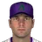

Franchise record book · MLB
Toronto Blue Jays
Seasons covered: 1977–2002. Only games played for this franchise count.
Read this first: seasons 1871–2001 are real MLB history that shipped with the OOTP file, mapped by OOTP onto this universe's 30 original franchises (club names as they were that season). 2002 is this universe, season to date (top tiers: MLB, ABL, FBL). Player names are as the export stores them; OOTP gives some historical players generated names.
Home runs
Hits
RBI
Runs
| # | Player | Season | Team | Runs |
|---|---|---|---|---|
| #1 | 1999 |  Toronto Blue Jays Toronto Blue Jays | 134 | |
| #2 | 1993 | Toronto Blue Jays | 121 | |
| #3 | 1993 | Toronto Blue Jays | 116 | |
| #4 | 2000 | Toronto Blue Jays | 115 | |
| #5 | 1999 | Toronto Blue Jays | 113 | |
| #6 | 1987 | Toronto Blue Jays | 111 | |
| #7 | 1991 | Toronto Blue Jays | 110 | |
| #8 | 1993 | Toronto Blue Jays | 109 | |
| #9 | 1993 | Toronto Blue Jays | 109 | |
| #10 | 2000 | Toronto Blue Jays | 107 |
Stolen bases
Doubles
Triples
Walks
| # | Player | Season | Team | Walks |
|---|---|---|---|---|
| #1 | 2000 | Toronto Blue Jays | 123 | |
| #2 | 1989 | Toronto Blue Jays | 119 | |
| #3 | 1993 | Toronto Blue Jays | 114 | |
| #4 | 2001 | Toronto Blue Jays | 111 | |
| #5 | 1990 | Toronto Blue Jays | 94 | |
| #6 | 1992 | Toronto Blue Jays | 87 | |
| #7 | 1999 | Toronto Blue Jays | 86 | |
| #8 | 1995 | Toronto Blue Jays | 84 | |
| #9 | 1992 | Toronto Blue Jays | 82 | |
| #10 | 1993 | Toronto Blue Jays | 80 |
Total bases
| # | Player | Season | Team | Total bases |
|---|---|---|---|---|
| #1 | 2000 | Toronto Blue Jays | 378 | |
| #2 | 1987 | Toronto Blue Jays | 369 | |
| #3 | 1999 | Toronto Blue Jays | 361 | |
| #4 | 1986 | Toronto Blue Jays | 341 | |
| #5 | 1993 | Toronto Blue Jays | 330 | |
| #6 | 1986 | Toronto Blue Jays | 329 | |
| #7 | 1999 | Toronto Blue Jays | 327 | |
| #8 | 1993 | Toronto Blue Jays | 324 | |
| #9 | 2000 | Toronto Blue Jays | 322 | |
| #10 | 1998 | Toronto Blue Jays | 321 |
Batting average qualified
| # | Player | Season | Team | Batting average |
|---|---|---|---|---|
| #1 | 1993 | Toronto Blue Jays | .363 | |
| #2 | 2000 | Toronto Blue Jays | .344 | |
| #3 | 1994 | Toronto Blue Jays | .341 | |
| #4 | 1993 | Toronto Blue Jays | .332 | |
| #5 | 1999 | Toronto Blue Jays | .328 | |
| #6 | 1993 | Toronto Blue Jays | .326 | |
| #7 | 1987 | Toronto Blue Jays | .322 | |
| #8 | 1998 | Toronto Blue Jays | .321 | |
| #9 | 1999 | Toronto Blue Jays | .320 | |
| #10 | 2000 | Toronto Blue Jays | .319 |
On-base % qualified
| # | Player | Season | Team | On-base % |
|---|---|---|---|---|
| #1 | 1993 | Toronto Blue Jays | .473 | |
| #2 | 2000 | Toronto Blue Jays | .470 | |
| #3 | 1999 | Toronto Blue Jays | .427 | |
| #4 | 1994 | Toronto Blue Jays | .410 | |
| #5 | 1993 | Toronto Blue Jays | .408 | |
| #6 | 2001 | Toronto Blue Jays | .408 | |
| #7 | 1992 | Toronto Blue Jays | .405 | |
| #8 | 2002 (MLB) | Toronto Blue Jays | .404 | |
| #9 | 1993 | Toronto Blue Jays | .402 | |
| #10 | 1990 | Toronto Blue Jays | .400 |
Slugging % qualified
| # | Player | Season | Team | Slugging % |
|---|---|---|---|---|
| #1 | 2000 | Toronto Blue Jays | .664 | |
| #2 | 1987 | Toronto Blue Jays | .605 | |
| #3 | 1993 | Toronto Blue Jays | .599 | |
| #4 | 1998 | Toronto Blue Jays | .592 | |
| #5 | 1999 | Toronto Blue Jays | .588 | |
| #6 | 2002 (MLB) | Toronto Blue Jays | .572 | |
| #7 | 1999 | Toronto Blue Jays | .571 | |
| #8 | 1986 | Toronto Blue Jays | .559 | |
| #9 | 2000 | Toronto Blue Jays | .558 | |
| #10 | 1988 | Toronto Blue Jays | .552 |
OPS qualified
| # | Player | Season | Team | OPS |
|---|---|---|---|---|
| #1 | 2000 | Toronto Blue Jays | 1.134 | |
| #2 | 1993 | Toronto Blue Jays | 1.072 | |
| #3 | 1998 | Toronto Blue Jays | .978 | |
| #4 | 2002 (MLB) | Toronto Blue Jays | .976 | |
| #5 | 1999 | Toronto Blue Jays | .972 | |
| #6 | 1987 | Toronto Blue Jays | .957 | |
| #7 | 1999 | Toronto Blue Jays | .948 | |
| #8 | 2001 | Toronto Blue Jays | .948 | |
| #9 | 1990 | Toronto Blue Jays | .930 | |
| #10 | 1988 | Toronto Blue Jays | .928 |
WAR (OOTP)
| # | Player | Season | Team | WAR (OOTP) |
|---|---|---|---|---|
| #1 | 2000 | Toronto Blue Jays | 8.5 | |
| #2 | 1993 | Toronto Blue Jays | 7.5 | |
| #3 | 1993 | Toronto Blue Jays | 6.7 | |
| #4 | 1993 | Toronto Blue Jays | 6.6 | |
| #5 | 1989 | Toronto Blue Jays | 6.5 | |
| #6 | 1988 | Toronto Blue Jays | 6.4 | |
| #7 | 1992 | Toronto Blue Jays | 6.3 | |
| #8 | 1990 | Toronto Blue Jays | 6.2 | |
| #9 | 1986 | Toronto Blue Jays | 5.9 | |
| #10 | 1999 | Toronto Blue Jays | 5.9 |
Wins
| # | Player | Season | Team | Wins |
|---|---|---|---|---|
| #1 | 1997 | Toronto Blue Jays | 21 | |
| #2 | 1992 | Toronto Blue Jays | 21 | |
| #3 |  Pat Hentgen • | 1996 | Toronto Blue Jays | 20 |
| #4 | 2000 | Toronto Blue Jays | 20 | |
| #5 | 1998 | Toronto Blue Jays | 20 | |
| #6 | Pat Hentgen • | 1993 | Toronto Blue Jays | 19 |
| #7 | 1990 | Toronto Blue Jays | 18 | |
| #8 | 1984 | Toronto Blue Jays | 17 | |
| #9 | 1985 | Toronto Blue Jays | 17 | |
| #10 | 1987 | Toronto Blue Jays | 17 |
Strikeouts
| # | Player | Season | Team | Strikeouts |
|---|---|---|---|---|
| #1 | 1997 | Toronto Blue Jays | 292 | |
| #2 | 1998 | Toronto Blue Jays | 271 | |
| #3 | 1984 | Toronto Blue Jays | 198 | |
| #4 | 1993 | Toronto Blue Jays | 194 | |
| #5 | 1983 | Toronto Blue Jays | 187 | |
| #6 | 1987 | Toronto Blue Jays | 180 | |
| #7 | Pat Hentgen • | 1996 | Toronto Blue Jays | 177 |
| #8 | 1999 | Toronto Blue Jays | 169 | |
| #9 | 1985 | Toronto Blue Jays | 167 | |
| #10 | 2000 | Toronto Blue Jays | 166 |
Saves
Innings
| # | Player | Season | Team | Innings |
|---|---|---|---|---|
| #1 | 1982 | Toronto Blue Jays | 288.1 | |
| #2 | 1983 | Toronto Blue Jays | 278.0 | |
| #3 | 1984 | Toronto Blue Jays | 267.0 | |
| #4 | 1982 | Toronto Blue Jays | 266.2 | |
| #5 | Pat Hentgen • | 1996 | Toronto Blue Jays | 265.2 |
| #6 | 1985 | Toronto Blue Jays | 265.0 | |
| #7 | Pat Hentgen • | 1997 | Toronto Blue Jays | 264.0 |
| #8 | 1997 | Toronto Blue Jays | 264.0 | |
| #9 | 1984 | Toronto Blue Jays | 261.2 | |
| #10 | 1987 | Toronto Blue Jays | 261.0 |
Complete games
Shutouts
ERA qualified
| # | Player | Season | Team | ERA |
|---|---|---|---|---|
| #1 | 1997 | Toronto Blue Jays | 2.05 | |
| #2 | 1985 | Toronto Blue Jays | 2.48 | |
| #3 | 1992 | Toronto Blue Jays | 2.64 | |
| #4 | 1998 | Toronto Blue Jays | 2.65 | |
| #5 | 1987 | Toronto Blue Jays | 2.76 | |
| #6 | 1984 | Toronto Blue Jays | 2.83 | |
| #7 | 1996 | Toronto Blue Jays | 2.93 | |
| #8 | 1990 | Toronto Blue Jays | 2.93 | |
| #9 | 1985 | Toronto Blue Jays | 3.00 | |
| #10 | 1988 | Toronto Blue Jays | 3.04 |
WHIP qualified
| # | Player | Season | Team | WHIP |
|---|---|---|---|---|
| #1 | 1997 | Toronto Blue Jays | 1.03 | |
| #2 | 1987 | Toronto Blue Jays | 1.06 | |
| #3 | 1998 | Toronto Blue Jays | 1.10 | |
| #4 | 1990 | Toronto Blue Jays | 1.11 | |
| #5 | 1985 | Toronto Blue Jays | 1.12 | |
| #6 | 1996 | Toronto Blue Jays | 1.12 | |
| #7 | 1984 | Toronto Blue Jays | 1.13 | |
| #8 | 1984 | Toronto Blue Jays | 1.14 | |
| #9 | 1983 | Toronto Blue Jays | 1.14 | |
| #10 | 1981 | Toronto Blue Jays | 1.14 |
K/9 qualified
| # | Player | Season | Team | K/9 |
|---|---|---|---|---|
| #1 | 1998 | Toronto Blue Jays | 10.4 | |
| #2 | 1997 | Toronto Blue Jays | 10.0 | |
| #3 | 1992 | Toronto Blue Jays | 8.2 | |
| #4 | 2002 (MLB) | Toronto Blue Jays | 8.1 | |
| #5 | 1996 | Toronto Blue Jays | 7.9 | |
| #6 | 1993 | Toronto Blue Jays | 7.9 | |
| #7 | 1994 | Toronto Blue Jays | 7.6 | |
| #8 | Pat Hentgen • | 1994 | Toronto Blue Jays | 7.6 |
| #9 | 2002 (MLB) | Toronto Blue Jays | 7.6 | |
| #10 | 1995 | Toronto Blue Jays | 7.5 |
WAR (OOTP)
| # | Player | Season | Team | WAR (OOTP) |
|---|---|---|---|---|
| #1 | 1997 | Toronto Blue Jays | 11.4 | |
| #2 | 1998 | Toronto Blue Jays | 8.6 | |
| #3 | 2000 | Toronto Blue Jays | 6.4 | |
| #4 | Pat Hentgen • | 1996 | Toronto Blue Jays | 6.3 |
| #5 | 1987 | Toronto Blue Jays | 6.3 | |
| #6 | 1984 | Toronto Blue Jays | 5.9 | |
| #7 | 1992 | Toronto Blue Jays | 5.7 | |
| #8 | 1987 | Toronto Blue Jays | 5.5 | |
| #9 | 1983 | Toronto Blue Jays | 5.4 | |
| #10 | 1991 | Toronto Blue Jays | 5.4 |
Home runs
| # | Player | Years | Home runs |
|---|---|---|---|
| #1 | 1993–02 | 229 | |
| #2 | 1983–98 | 203 | |
| #3 | 1981–93 | 202 | |
| #4 | 1981–92 | 179 | |
| #5 | 1980–91 | 149 | |
| #6 | 1976–91 | 131 | |
| #7 | 1986–02 | 125 | |
| #8 | 1993–02 | 119 | |
| #9 | 1984–93 | 114 | |
| #10 | 1991–02 | 113 |
Hits
| # | Player | Years | Hits |
|---|---|---|---|
| #1 | 1983–01 | 1583 | |
| #2 | 1980–91 | 1319 | |
| #3 | 1981–93 | 1294 | |
| #4 | 1983–98 | 1051 | |
| #5 | 1978–89 | 1028 | |
| #6 | 1978–88 | 982 | |
| #7 | 1993–02 | 978 | |
| #8 | 1981–92 | 919 | |
| #9 | 1989–02 | 910 | |
| #10 | 1976–91 | 888 |
RBI
| # | Player | Years | RBI |
|---|---|---|---|
| #1 | 1981–93 | 740 | |
| #2 | 1983–98 | 736 | |
| #3 | 1993–02 | 706 | |
| #4 | 1980–91 | 651 | |
| #5 | 1983–01 | 613 | |
| #6 | 1981–92 | 527 | |
| #7 | 1976–91 | 518 | |
| #8 | 1978–88 | 478 | |
| #9 | 1989–02 | 471 | |
| #10 | 1984–93 | 434 |
Runs
| # | Player | Years | Runs |
|---|---|---|---|
| #1 | 1980–91 | 768 | |
| #2 | 1983–01 | 704 | |
| #3 | 1981–93 | 641 | |
| #4 | 1993–02 | 595 | |
| #5 | 1983–98 | 578 | |
| #6 | 1978–88 | 538 | |
| #7 | 1981–92 | 530 | |
| #8 | 1989–02 | 464 | |
| #9 | 1978–89 | 453 | |
| #10 | 1985–01 | 452 |
Stolen bases
| # | Player | Years | Stolen bases |
|---|---|---|---|
| #1 | 1980–91 | 255 | |
| #2 | 1988–02 | 206 | |
| #3 | 1978–89 | 194 | |
| #4 | 1983–01 | 172 | |
| #5 | 1995–02 | 148 | |
| #6 | 1985–01 | 126 | |
| #7 | 1983–99 | 101 | |
| #8 | 1975–90 | 91 | |
| #9 | 1994–02 | 85 | |
| #10 | 1984–93 | 80 |
Doubles
| # | Player | Years | Doubles |
|---|---|---|---|
| #1 | 1983–01 | 291 | |
| #2 | 1993–02 | 245 | |
| #3 | 1980–91 | 242 | |
| #4 | 1981–93 | 237 | |
| #5 | 1983–98 | 218 | |
| #6 | 1989–02 | 213 | |
| #7 | 1977–92 | 204 | |
| #8 | 1978–88 | 177 | |
| #9 | 1994–02 | 172 | |
| #10 | 1978–89 | 172 |
Triples
| # | Player | Years | Triples |
|---|---|---|---|
| #1 | 1983–01 | 72 | |
| #2 | 1980–91 | 60 | |
| #3 | 1976–93 | 50 | |
| #4 | 1978–88 | 42 | |
| #5 | 1988–02 | 36 | |
| #6 | 1985–01 | 34 | |
| #7 | 1981–93 | 32 | |
| #8 | 1983–98 | 28 | |
| #9 | 1981–92 | 27 | |
| #10 | 1978–89 | 26 |
Walks
| # | Player | Years | Walks |
|---|---|---|---|
| #1 | 1980–91 | 547 | |
| #2 | 1993–02 | 547 | |
| #3 | 1989–02 | 514 | |
| #4 | 1983–01 | 439 | |
| #5 | 1977–92 | 416 | |
| #6 | 1976–91 | 403 | |
| #7 | 1978–88 | 390 | |
| #8 | 1986–02 | 352 | |
| #9 | 1981–92 | 342 | |
| #10 | 1988–02 | 322 |
Total bases
| # | Player | Years | Total bases |
|---|---|---|---|
| #1 | 1981–93 | 2201 | |
| #2 | 1983–01 | 2198 | |
| #3 | 1980–91 | 2128 | |
| #4 | 1983–98 | 1934 | |
| #5 | 1993–02 | 1926 | |
| #6 | 1981–92 | 1672 | |
| #7 | 1978–88 | 1579 | |
| #8 | 1976–91 | 1475 | |
| #9 | 1989–02 | 1462 | |
| #10 | 1978–89 | 1348 |
Batting average min 2,000 PA
| # | Player | Years | Batting average |
|---|---|---|---|
| #1 | 1988–02 | .307 | |
| #2 | 1995–02 | .302 | |
| #3 | 1983–01 | .297 | |
| #4 | 1989–02 | .293 | |
| #5 | 1978–89 | .288 | |
| #6 | 1981–93 | .286 | |
| #7 | 1993–02 | .286 | |
| #8 | 1993–02 | .281 | |
| #9 | 1977–92 | .280 | |
| #10 | 1986–02 | .278 |
On-base % min 2,000 PA
| # | Player | Years | On-base % |
|---|---|---|---|
| #1 | 1989–02 | .395 | |
| #2 | 1986–02 | .389 | |
| #3 | 1993–02 | .388 | |
| #4 | 1988–02 | .382 | |
| #5 | 1995–02 | .369 | |
| #6 | 1977–92 | .365 | |
| #7 | 1983–01 | .353 | |
| #8 | 1968–82 | .352 | |
| #9 | 1993–02 | .344 | |
| #10 | 1978–88 | .336 |
Slugging % min 2,000 PA
| # | Player | Years | Slugging % |
|---|---|---|---|
| #1 | 1993–02 | .554 | |
| #2 | 1986–02 | .530 | |
| #3 | 1993–02 | .505 | |
| #4 | 1981–93 | .486 | |
| #5 | 1981–92 | .483 | |
| #6 | 1983–98 | .473 | |
| #7 | 1989–02 | .471 | |
| #8 | 1997–02 | .467 | |
| #9 | 1988–02 | .451 | |
| #10 | 1968–82 | .450 |
OPS min 2,000 PA
| # | Player | Years | OPS |
|---|---|---|---|
| #1 | 1993–02 | .942 | |
| #2 | 1986–02 | .919 | |
| #3 | 1989–02 | .866 | |
| #4 | 1993–02 | .849 | |
| #5 | 1988–02 | .833 | |
| #6 | 1981–92 | .817 | |
| #7 | 1995–02 | .816 | |
| #8 | 1981–93 | .811 | |
| #9 | 1968–82 | .802 | |
| #10 | 1997–02 | .802 |
WAR (OOTP)
| # | Player | Years | WAR (OOTP) |
|---|---|---|---|
| #1 | 1983–01 | 30.2 | |
| #2 | 1993–02 | 28.4 | |
| #3 | 1981–93 | 26.9 | |
| #4 | 1980–91 | 26.6 | |
| #5 | 1988–02 | 23.0 | |
| #6 | 1989–02 | 21.6 | |
| #7 | 1986–02 | 21.3 | |
| #8 | 1981–92 | 20.9 | |
| #9 | 1977–92 | 18.2 | |
| #10 | 1976–91 | 17.7 |
Wins
| # | Player | Years | Wins |
|---|---|---|---|
| #1 | 1979–98 | 175 | |
| #2 | 1977–91 | 128 | |
| #3 | 1984–98 | 116 | |
| #4 | Pat Hentgen • | 1991–02 | 105 |
| #5 | 1987–02 | 84 | |
| #6 | 1991–00 | 76 | |
| #7 | 1988–02 | 69 | |
| #8 | 1980–85 | 51 | |
| #9 | 1971–89 | 46 | |
| #10 | 1985–91 | 46 |
Strikeouts
| # | Player | Years | Strikeouts |
|---|---|---|---|
| #1 | 1979–98 | 1658 | |
| #2 | 1977–91 | 1237 | |
| #3 | 1991–00 | 1030 | |
| #4 | Pat Hentgen • | 1991–02 | 995 |
| #5 | 1984–98 | 944 | |
| #6 | 1987–02 | 784 | |
| #7 | 1986–95 | 671 | |
| #8 | 1988–02 | 662 | |
| #9 | 1982–95 | 644 | |
| #10 | 1997–02 | 567 |
Saves
| # | Player | Years | Saves |
|---|---|---|---|
| #1 | 1982–95 | 217 | |
| #2 | 1986–95 | 121 | |
| #3 | 1999–02 | 100 | |
| #4 | 1991–02 | 52 | |
| #5 | 1977–84 | 31 | |
| #6 | 1977–86 | 30 | |
| #7 | 1985–98 | 28 | |
| #8 | 1994–98 | 20 | |
| #9 | 1997–02 | 16 | |
| #10 | 1988–98 | 16 |
Innings
| # | Player | Years | Innings |
|---|---|---|---|
| #1 | 1979–98 | 2873.0 | |
| #2 | 1977–91 | 2204.2 | |
| #3 | 1984–98 | 1695.2 | |
| #4 | Pat Hentgen • | 1991–02 | 1555.2 |
| #5 | 1991–00 | 1215.2 | |
| #6 | 1987–02 | 1148.2 | |
| #7 | 1988–02 | 1139.0 | |
| #8 | 1980–85 | 946.0 | |
| #9 | 1997–02 | 797.1 | |
| #10 | 1985–91 | 772.1 |
Complete games
| # | Player | Years | Complete games |
|---|---|---|---|
| #1 | 1979–98 | 103 | |
| #2 | 1977–91 | 73 | |
| #3 | Pat Hentgen • | 1991–02 | 31 |
| #4 | 1984–98 | 28 | |
| #5 | 1980–85 | 27 | |
| #6 | 1973–80 | 25 | |
| #7 | 1971–89 | 25 | |
| #8 | 1973–81 | 21 | |
| #9 | 1974–84 | 19 | |
| #10 | 1987–02 | 18 |
Shutouts
| # | Player | Years | Shutouts |
|---|---|---|---|
| #1 | 1979–98 | 30 | |
| #2 | 1977–91 | 11 | |
| #3 | 1984–98 | 10 | |
| #4 | Pat Hentgen • | 1991–02 | 9 |
| #5 | 1984–02 | 6 | |
| #6 | 1997–02 | 5 | |
| #7 | 1973–81 | 4 | |
| #8 | 1988–02 | 4 | |
| #9 | 1973–80 | 3 | |
| #10 | 1971–89 | 3 |
ERA min 500 IP
| # | Player | Years | ERA |
|---|---|---|---|
| #1 | 1982–95 | 2.48 | |
| #2 | 1986–95 | 3.18 | |
| #3 | 1979–98 | 3.42 | |
| #4 | 1984–98 | 3.42 | |
| #5 | 1971–89 | 3.56 | |
| #6 | 1992–02 | 3.67 | |
| #7 | 1985–91 | 3.87 | |
| #8 | 1987–02 | 4.06 | |
| #9 | 1983–92 | 4.07 | |
| #10 | 1991–00 | 4.07 |
WHIP min 500 IP
| # | Player | Years | WHIP |
|---|---|---|---|
| #1 | 1982–95 | 1.02 | |
| #2 | 1984–98 | 1.20 | |
| #3 | 1971–89 | 1.23 | |
| #4 | 1986–95 | 1.24 | |
| #5 | 1979–98 | 1.24 | |
| #6 | 1987–02 | 1.28 | |
| #7 | 1991–00 | 1.35 | |
| #8 | 1977–91 | 1.36 | |
| #9 | 1980–85 | 1.36 | |
| #10 | 1985–91 | 1.36 |
K/9 min 500 IP
| # | Player | Years | K/9 |
|---|---|---|---|
| #1 | 1982–95 | 10.3 | |
| #2 | 1986–95 | 9.3 | |
| #3 | 1991–00 | 7.6 | |
| #4 | 1997–02 | 7.6 | |
| #5 | 1993–02 | 6.4 | |
| #6 | 1997–02 | 6.4 | |
| #7 | 1987–02 | 6.1 | |
| #8 | 1992–02 | 5.8 | |
| #9 | Pat Hentgen • | 1991–02 | 5.8 |
| #10 | 1988–02 | 5.2 |
WAR (OOTP)
| # | Player | Years | WAR (OOTP) |
|---|---|---|---|
| #1 | 1979–98 | 45.2 | |
| #2 | 1984–98 | 29.4 | |
| #3 | 1977–91 | 28.3 | |
| #4 | 1991–00 | 23.0 | |
| #5 | Pat Hentgen • | 1991–02 | 20.4 |
| #6 | 1984–02 | 20.0 | |
| #7 | 1987–02 | 18.8 | |
| #8 | 1986–95 | 13.7 | |
| #9 | 1982–95 | 13.2 | |
| #10 | 1988–02 | 12.4 |
The franchise's best real-history seasons by winning percentage.
| Season | Club | W | L | PCT | Postseason |
|---|---|---|---|---|---|
| 1985 | Toronto Blue Jays | 99 | 62 | .615 | Playoffs |
| 1987 | Toronto Blue Jays | 96 | 66 | .593 | |
| 1992 | Toronto Blue Jays | 96 | 66 | .593 | Champion |
| 1993 | Toronto Blue Jays | 95 | 67 | .586 | Champion |
| 1991 | Toronto Blue Jays | 91 | 71 | .562 | Playoffs |
| 1983 | Toronto Blue Jays | 89 | 73 | .549 | |
| 1984 | Toronto Blue Jays | 89 | 73 | .549 | |
| 1989 | Toronto Blue Jays | 89 | 73 | .549 | Playoffs |
| 1998 | Toronto Blue Jays | 88 | 74 | .543 | |
| 1988 | Toronto Blue Jays | 87 | 75 | .537 |